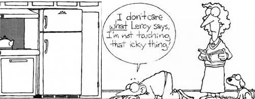

Perform these quick, once-a-year home-maintenance tasks, and you can actually...
According to Leroy Richter, former director of THE Mother Earth News Eco-Village and refrigeration and heating instructor at a local technical school, proper maintenance of a modern refrigerator can extend its life from barely longer than the 5year warranty period to 15 or even 20 years. But wait. You say you have an old one out in the garage that's gone 30 years without a bit of attention? Why shouldn't your new fridge-the convenient side-by-side with ice maker-last at least that long?
Well, since AC power became widely available in the '30s, the vapor-compression refrigerator has changed quite a bit. Much of this evolution has been aimed at making the appliance more convenient and attractive-not more efficient or reliable-by relocating the condenser coil. Refrigeration is the process of removing heat from the inside of a box and expelling it through condenser tubes into the surrounding air. Until shortly after World War II, most refrigerators had their condensers on top-the beehive design-and were equipped with fans. Because hot air rises, this was a pretty logical place to put the condenser. Then, from around 1945 to 1965, condensers were usually mounted on the back of the box. As long as the condenser wasn't backed directly against a wall, airflow was adequate to sweep the heat away.
You may have noticed, though, that the condensers of most new refrigerators are no longer on top or in back. They're now underneath, a very convenient but inefficient and problematic location. Not only does hot air tend to rise and flow around the refrigerator's cabinet, heating the contents, but the horizontal condenser is almost completely dependent on the fan for heat exchange and also is quite likely to accumulate dust.
The most expensive component of a refrigerator is the compressor. And, according to Leroy, the most common reason for premature compressor failure is overheating resulting from inadequate airflow around the condenser. There is little doubt in his mind that many people are paying a high price for the "modern" appearance of a bottom-mounted condenser.
Without any maintenance at all, a new bottom-mount-condenser refrigerator will run with no problems through the five-year warranty period and then will be likely to conk out in the sixth or seventh year. "However, if just once a year, you'll take the time to clean the accumulated dust off the coil, you can prevent compressor failure and extend the life of your refrigerator to 10 to 15-maybe even 20-years," Richter explains.
The best tool for coil cleaning is a refrigerator brush specially designed for the task. Available from most hardware stores for less than $5.00, the stiff, narrow brush is about 18 inches long, with half-inch-wide bristles that fit readily between the bends of the coil. Lacking this, a homeowner can use a broom, or a vacuum cleaner in which the airflow has been reversed to "blow."
Cleaning the condenser coil is a straightforward procedure. Simply unplug the appliance, remove the protective grille (if there is one), and gently brush or blow the dirt off the coil. "When you dust the coil, take the time to wipe the dirt off the fan blades, too," Leroy advises. "Dust can accumulate on each blade's leading edge, causing the fan to slow down and turn out of balance. This can place a strain on the fan motor." Once the coil and the fan are clean, sweep up the dust, replace the grille, and plug the refrigerator back in again.
"It sounds simple," Leroy admits, "but it can save you a lot of money and hassle in the long run. A refrigerator with a clean condenser coil will release heat more efficiently, operate with less strain on the mechanical parts, and draw less current. Essentially, your appliance will do a better job for less money."
Replacement of the gasket-the strip of rubber around the door that makes the appliance airtight-is a job that may, depending on the model, call for professional help. However, you can easily check the effectiveness of the seal on an older refrigerator.
"Take a dollar bill and try to move it around the gasket with the door shut," Richter says. "If it slides freely, the gap will measure about 1/8-inch wide, and the gasket probably needs to be replaced."
Our last maintenance tip is one of Leroy's definite no-nos: On older "non-frostfree" appliances, do not-repeat, do not-use an ice pick, a knife, or other sharp object to chip frost from the interior coil. "If you do, you run the risk of puncturing the coil," Leroy says. "This can release the freon charge and introduce water into the freon. Expensive professional attention is likely to be required for correcting these problems and for restoring the refrigerator to service."
|
 |
|
|